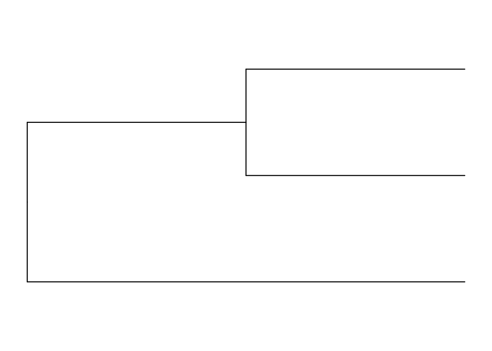
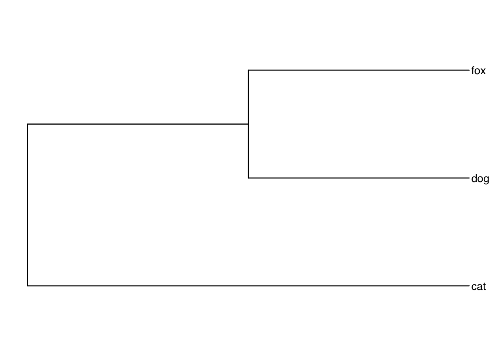
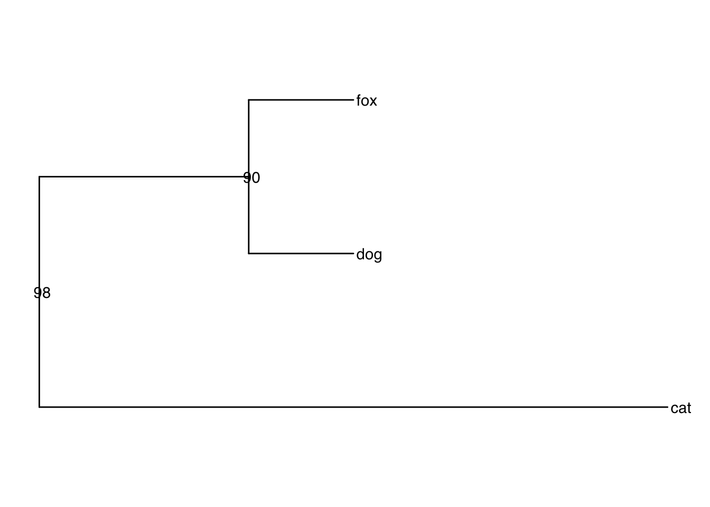
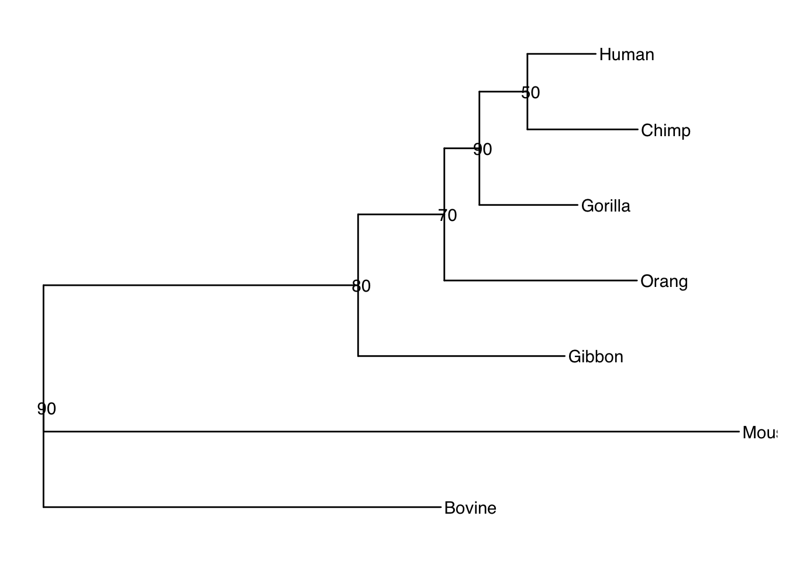

Chapter 2 Newick and phylo trees
2.1 Newick files
Newick format is a way of representing a phylogeny tree with parentheses and commas. If we have a simple phylogeny like the following:
# ______A A, B and C are leaves or Tip nodes.
# _____.| The dots mark internal nodes.
# | |_______B
# .|
# |____________CIts most simple Newick format representation would be:
As we will see later the standard phylogeny object in R is an object of class “phylo”. Lets obtain our tree in phylo format.
And now we can use ggtree to generate an image

Here you can see leaves (Tip nodes) and internal nodes colored in red and blue, respectively

Figure 2.1: Leaves (tips) in red and internal nodes in blue
The tree leaves can be labeled with clade names( ej. species, strains)

Figure 2.2: If a Newick has leave names
You can indicate different lengths for each branch The length reflects the amount of evolutionary change of the branch

Figure 2.3: If a newick has branch lengths
Internal nodes are common ancestors for a group of leaves and you can also label them.
tree<-"(cat:0.6,(dog:0.1,fox:0.1)Anc2:0.2)Anc1;"
tree<-read.tree(text=tree)
ggtree(tree)+geom_tiplab()+geom_nodelab()
Figure 2.4: Newick with internal node labels
… or instead of a name you can use a bootstrap value: Bootstrap values show how frequently we observe same branch is we repeat the generation of a phylogeny hundreds of times with random samples of our data. They are percentages.
#Notice the format bootstrap_value:distance in internal nodes
tree<-"(cat:0.6,(dog:0.1,fox:0.1)90:0.2)98;"
tree<-read.tree(text=tree)
ggtree(tree,)+geom_tiplab()+geom_nodelab()
Figure 2.5: Newick with bootstraps
Here we have a more complex example
tree<-"(Bovine:0.69395,
(Gibbon:0.36079,
(Orang:0.33636,
(Gorilla:0.17147,
(Chimp:0.19268, Human:0.11927)50:0.08386
)90:0.06124
)70:0.15057
)80:0.54939,Mouse:1.21460)90;"
tree<-read.tree(text=tree)
ggtree(tree)+geom_tiplab()+geom_nodelab()
2.2 phylo objects
The standard phylogeny object in R is the phylo object popularized by the ape package. The phylo class is used by most R packages that deal with phylogenies. Thanks to that there are many functions to create a phylo object from a Newick format file:
ape::read.tree("example_eco_model.nwk") %>% class
phyloseq::read_tree("example_eco_model.nwk") %>% class
phytools::read.newick("example_eco_model.nwk") %>% class
treeio::read.newick("example_eco_model.nwk"") %>% classA phylo object describes a phylogeny with the following data:
## [1] "phylo"## [1] "edge" "edge.length" "Nnode" "node.label" "tip.label"tip.label shows the names or ids of the species, genomes or strains whose evolutionary history we are studying (names of the leaves or tips):
## [1] "GCF_000026265.1" "GCF_000010385.1" "GCF_018884265.1" "GCF_000017745.1"
## [5] "GCF_000010765.1" "GCF_000091005.1"node.label has the labels of the internal nodes. In many cases, these tags are the bootstrap support values.
[!NOTE] When we: 1) Create phylogeny from a sequence alignment with RaxML and b) calculate bootstraps for the phylogeny we obtain a final tree with bootstrap support values added as internal node labels.
## [1] "" "0.981998" "0.574257" "0.960396" "0.996464" "1.000000"Phylo contains an edges matrix of ancestor — > descendant connections. Here the numbers are IDs of the internal and tip nodes.
- Column 1: Ancestral nodes (closer to the root)
- Column 2: Descendant nodes.
- The leaves are numbered from 1 to the total number of leaves.
- The internal node ids go after the leave ids.
## [,1] [,2]
## [1,] 31 32
## [2,] 32 33
## [3,] 33 1
## [4,] 33 2
## [5,] 32 34
## [6,] 34 3You can obtain the label for a given node ID like this
## [1] 2edge.length holds the lengths of the edges of the edge matrix.
[!NOTE] When we create phylogeny from a sequence alignment with RaxML, branch lengths are genetic distances, defined as the expected number of nucleotide or amino acid substitutions per site.
## [1] 0.000884 0.004205 0.005838 0.006266 0.002459 0.006020